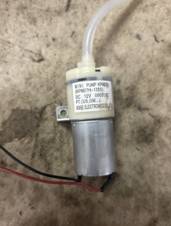
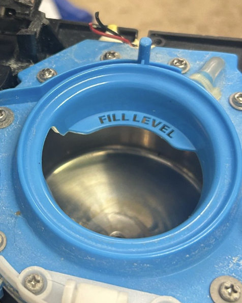
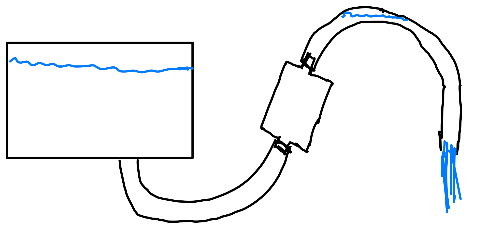
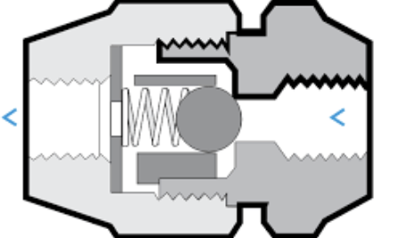

Fluid Mechanical Dissection
This is an investigative study into who a fluid mechanical device work as part of a fluid dynamics course at Cornell University. I will be applying knowledge I have learned in the course to a real system to describe how it works.
For MAE 3230 Fluid Dynamics at Cornell University we organized into groups and were given a fluid mechanical device to investigate. Our group was given a Kurig coffee maker seen in the header image. After dissection we found that the system was compossed of 3 major components.
These components were a reciprocating pump , heating container, and syphon. I will go into more detail in how each of these systems come together to make the Kurig function as a complete unit.



Starting with the reciprocating pump it pull air form the outside atmosphere through a one way value in the backward stroke of the pump. The valves work by having a ball cover a hole, when pressure is low on one side the ball is pushed out of the way and fluid can flow to the area of low pressure. When the pressure is high the ball moves into the hole and not fluid can flow. Figure 2 seen below provides a visual sketch of the system. It then pushes the air through another one way value to the heating container. This will cause a building of pressure on one side of the heating conatiner. The valves work by having a ball cover a hole, when pressure is low on one side the ball is pushed out of the way and fluid can flow to the area of low pressure.

The next topic of discussion is the heating container. This serves 3 purposes, the first is simply to hold an adequte amount of water to fill a coffee cup. The second is that the water is heating so that the coffee will be hot and able to absorb the caffine. The thrid and final is to provide a sealed space that can be pressurized to raise the fuild level in the next section the syphon.
The syphon might be more accurately called a manometer at first as it does not initally act as a syphon. Instead, it simpily creates a height difference in the water based on the pressure in the heating container. However, once the water reaches a certain height it will be able to flow down to a region of lower potential energy. This will pull water behind it along creating a syphon.
To figure out the pressure inside the heating container nesscary to start the syphoning pull we can use the hydrostatic equation: \( \Delta P = \rho g \Delta H \). Estimating the height difference between the top of the fluid in the heating container and the top of the syphon to be 2 cm we can use the known fluid properties of water at 90 degrees celsius, the typical temperature at which to brew coffee, and the gravitional constant to calculate the pressure difference between the inside of the heating conatiner and the external environment. This gives us the following properties: \[\Delta H = 0.02\, \text{m}\] \[\rho \big|_{T = 90^\circ C} = 965.3 \frac{kg}{m^3} \] \[g = 9.81 \frac{m}{s^2} \] Thus we can write the equation: \[ \Delta P = 965.3 \times 9.81 \times 0.02 \] This gives that \( \Delta P = )
What did you learn? What would you do differently? This section shows self-awareness and growth — qualities that matter to research advisors, employers, and admissions committees alike.